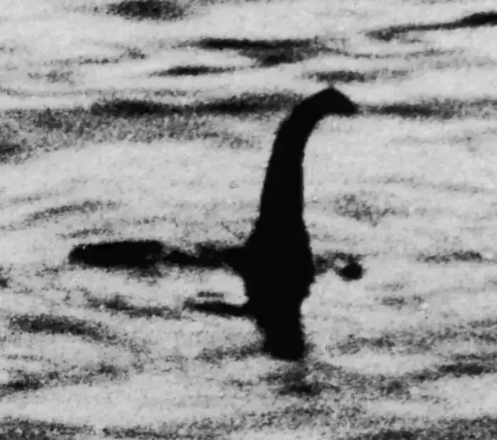
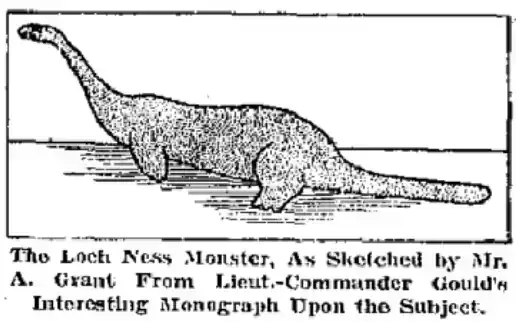
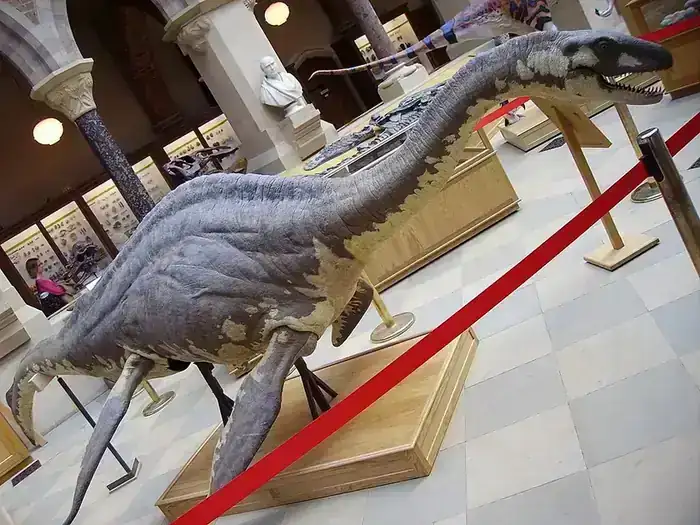

The claim
In 2019 a team led by Neil Gemmell sampled environmental DNA from Loch Ness — the fragments of genetic material every organism sheds into water — and sequenced what was there. They reported no DNA from reptiles, no DNA from a large unknown vertebrate, and eel DNA at almost every site.
Maps, diagrams and images






The popular reading was that Nessie is a giant eel. The paper said something more careful: eels are abundant in the loch, and the data cannot rule out an unusually large one.
What the method can and cannot do
eDNA is powerful for presence and rough abundance, and it is a genuine advance on sonar and photographs. It is weak on size: a DNA sequence does not tell you whether the eel that shed it was 30 cm or 3 m. It is also weak on rarity — a population of a handful of animals may shed too little DNA to detect, and absence of detection is not proof of absence.
So the result does two things at once. It makes a large unknown reptile unlikely, since a breeding population would leave DNA. And it leaves the eel idea alive without supporting it.
Documented: the loch is eel-rich; no reptilian eDNA was recovered.
Documented: the sampling was systematic and the method is sound for presence.
Not established: that a giant eel exists. Size is not recoverable from the data.
Not established: absence of anything else, because rare animals are hard to detect this way.
The honest position: the most plausible of the surviving explanations, on the weakest kind of evidence — and still far better than a plesiosaur, which the data argue against.
Why it is in the archive
Because it shows a real scientific technique applied to a folklore question, producing a result that is genuinely informative and is then over-read in both directions — by believers as vindication and by sceptics as a debunk. The archive labels it live debate because the question is open and the method is honest about its limits.
Open resources on this topic
- PapersOpen-access articles: DOAJ · PubMed Central · Internet Archive Scholar
- BooksPublic-domain and borrowable copies: Open Library · Project Gutenberg · Google Books · Internet Archive
Cite this page
Momin, S. (2026). Nessie as a Giant Eel. The Larger World Archive. https://drsamonline.github.io/LARGE_GLOBE/loch-ness-eel.htmlMomin, Sohil. “Nessie as a Giant Eel.” The Larger World Archive, 2026, https://drsamonline.github.io/LARGE_GLOBE/loch-ness-eel.html.Momin, Sohil. “Nessie as a Giant Eel.” The Larger World Archive, 2026. https://drsamonline.github.io/LARGE_GLOBE/loch-ness-eel.html.@misc{nessie2026loch,
author = {Momin, Sohil},
title = {Nessie as a Giant Eel},
year = {2026},
howpublished = {The Larger World Archive},
url = {https://drsamonline.github.io/LARGE_GLOBE/loch-ness-eel.html},
note = {Last reviewed 20 November 2026}
}Last reviewed 20 November 2026 · Corrections policy · this page is not peer reviewed
Sources for this page
- Wikipedia, “Loch Ness Monster” — the sightings, the searches and the eDNA studyen.wikipedia.org
- Wikipedia, “Environmental DNA” — what the method measuresen.wikipedia.org
- Wikipedia, “European eel” — the species the hypothesis rests onen.wikipedia.org
- Wikipedia, “Loch Ness” — the loch's size, depth and chemistryen.wikipedia.org